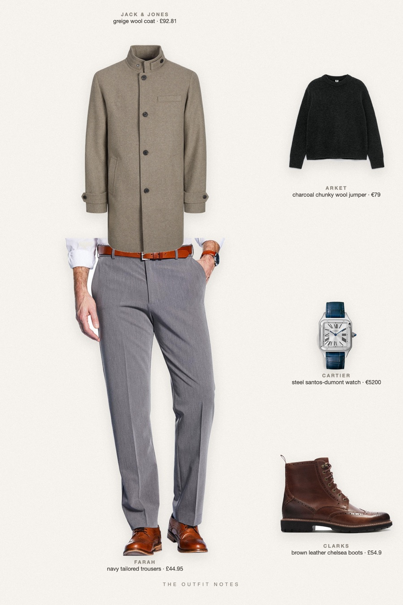
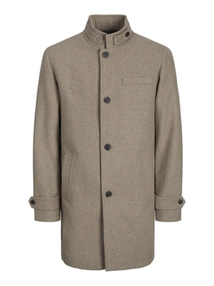

Rainy Greige
wool coat, charcoal knit, navy trousers

Rainy day outfit men for fall 2026: a greige Jack & Jones wool coat over an ARKET heavy charcoal wool jumper, navy Farah trousers and Clarks Batcombe Lord chelsea boots. A Cartier Santos-Dumont adds the quiet luxury touch. Classy fall jackets and cold weather layers, old money style.
The pieces
This page contains affiliate links: if you buy through them, we may earn a commission at no extra cost to you. Disclosure.

Jack & Jones
Greige wool coat
Shop ARKET
ARKET
Charcoal chunky wool jumper
Shop Farah
Farah
Navy tailored trousers
Shop Clarks
Clarks
Brown leather chelsea boots
Shop Cartier
Cartier
Steel santos-dumont watch
Shop
Prices are indicative, taken when the look was published, and may have changed. Pictures of the outfit are AI-generated illustrations of real products; the product photos are the retailers' own.
Published 2 October 2026.